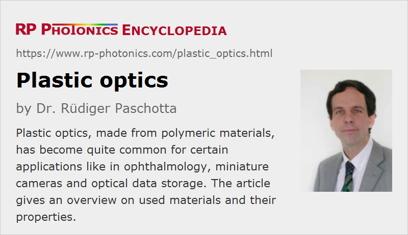

Plastic Optics
Definition: optical elements made of organic polymer materials
More specific term: plastic optical fibers
German: Kunststoff-Optik, Plastikoptik
How to cite the article; suggest additional literature
Author: Dr. Rüdiger Paschotta
There are various highly transparent organic polymer materials which can be used as optical materials for a range of applications. This area is called plastic optics or polymer optics. Due to their typically amorphous structures, these materials are also called organic glasses. In contrast, traditional optical glasses are inorganic glass materials.
Used Materials
Plastic optics are usually made from organic materials, with the major chemical constituents being carbon, hydrogen and oxygen. One starts with some kind of monomer substance, which is then subject to polymerization (sometimes in the form of polycondensation): macromolecules are formed by combining the monomers. The formed macromolecules usually have the form of chains, and those chains may also have additional connections.
Common polymer materials for optical applications are:
- poly(methyl methacrylate) (PMMA, acrylic)
- polycarbonate (PC)
- polystyrene
- liquid silicone, e.g. in the form of flexible resins
There are numerous trademarks for such materials.
Compared with plastics for other applications, optical plastics must be produced from high-quality pure materials with optimized processes in order to obtain a reasonably good optical properties.
Types of Optical Components
Plastic objects are mostly used in the form of common bulk optical components like lenses (including microlenses), prisms and optical windows. An attractive feature for lenses is that aspheric lenses with high numerical aperture can easily be fabricated with molding and embossing processes – more easily and quickly than with most inorganic glasses. Even free-form optics can be made relatively easily. Also, one can make achromatic lenses, including apochromats, as composite lenses. In addition, it is advantageous that plastic optical components may be fabricated together with their mounts.
Plastic optics are often equipped with coatings for improving the mechanical durability. For example, ophthalmic glasses are often equipped with coatings based on organically modified silica layers. Anti-reflection properties can also be realized, typically with coating designs having four to six layers, e.g. of silica and tantalum pentoxide. Dielectric coatings can also be made as thin polymeric films, e.g. some amorphous fluoropolymer.
There are plastic optical fibers, which are e.g. used as multimode fibers for optical fiber communications over short distances. They are often made with a PMMA core and a cladding made from silicone resin.
Polymers are also used for some integrated optics the devices, which may contain waveguides and other features.
Sometimes, special properties of polymers are exploited. For example, there are thermo-optic devices, exploiting the high thermo-optic coefficients of polymers. In other cases, optical nonlinearities are utilized.
Significant optical birefringence can be obtained simply by stretching a polymer material like polystyrene. Also, plastic polarizers can be relatively easily made. On the other hand, unwanted birefringence effects need to be avoided by careful process control e.g. in molding processes.
There are also micro-optics made from plastic materials.
Typical Properties of Plastic Optics
High light transmittance is usually obtained throughout the visible spectral region and to a limited extent in the near infrared. Often, there are absorption features at ≈1.7 μm due to the first overtones of C-H groups and additional absorption at longer wavelengths. However, absorption losses can be low in the three telecommunication windows around 850, 1310 and 1550 nm.
A primary driver for using plastic objects is the typically lower cost. This results from simple fabrication processes. For example, many polymer materials are suitable for molding processes, which are simple and quick and can even deliver aspheric surfaces.
On the other hand, the optical quality is tentatively lower than that achievable with optical glasses. Therefore, glasses are still widely used for high-quality optical elements, despite their higher cost.
The refractive indices of optical polymer materials are typically between 1.4 and 1.7, thus similar to those of typical optical glasses. However, their temperature dependence is usually much stronger than for glasses (with strongly negative dn / dT), which is essentially caused by their strong thermal expansion (one to two orders of magnitude stronger than for typical glasses). Therefore, plastic optics tend to be much more temperature sensitive than glass optics. They can often suitable only for operation temperatures of up to 60 °C, although polycarbonate materials can be used up to 130 °C.
The wavelength dependence of the refractive index (→ chromatic dispersion) of polymers is relatively strong. This can be a problem, but in some cases the combination of strong dispersion with low refractive index, which is unusual for glasses, can be useful.
Plastics are typically quite soft, i.e., they can relatively easily be deformed or scratched, but also do not break as easily as glasses. For some applications, very self transparent materials are needed, e.g. liquid silicone.
Most polymers are chemically less robust than glasses; for example, they may absorb water, which changes their properties.
The density of polymers is typically quite low, allowing the fabrication of lightweight components entity devices.
Due to residual absorption and the typically quite low thermal conductivity, polymers are usually not suitable for applications involving high optical powers or intensities. Therefore and because of the limited optical quality, they are not common in laser optics.
Polymers can relatively easily be equipped with dyes, for example for use as optical filters based on wavelength-dependent absorption.
Common Applications
Plastic lenses are widely used in ophthalmology. For reading glasses and sunglasses, for example, the low weight and reduced fragility is advantageous in addition to the lower cost. Intra-ocular lenses and contact lenses are basically always made of polymers. Eye protection glasses are often made from polymers with added dyes for spectral filtering.
For mobile devices like smartphones and drones, miniature photo cameras are needed which are basically always based on plastic optics, often with small aspheric lenses. There would be no available space for objectives with multiple spherical lenses, as are typically used for large photo cameras. Impressive image quality is nowadays possible with extremely compact and low-costs camera designs.
Similar aspects apply to optical storage devices, e.g. with CD, DVD and blu-ray disks.
Further, various types of light reflectors are often made of plastics, for example for directing the output of light emitting diodes.
Suppliers
The RP Photonics Buyer's Guide contains 37 suppliers for plastic optics. Among them:
Questions and Comments from Users
Here you can submit questions and comments. As far as they get accepted by the author, they will appear above this paragraph together with the author’s answer. The author will decide on acceptance based on certain criteria. Essentially, the issue must be of sufficiently broad interest.
Please do not enter personal data here; we would otherwise delete it soon. (See also our privacy declaration.) If you wish to receive personal feedback or consultancy from the author, please contact him e.g. via e-mail.
By submitting the information, you give your consent to the potential publication of your inputs on our website according to our rules. (If you later retract your consent, we will delete those inputs.) As your inputs are first reviewed by the author, they may be published with some delay.
See also: optical materials, plastic optical fibers, infrared optics, ultraviolet optics
and other articles in the category general optics
|  |
If you like this page, please share the link with your friends and colleagues, e.g. via social media:
These sharing buttons are implemented in a privacy-friendly way!